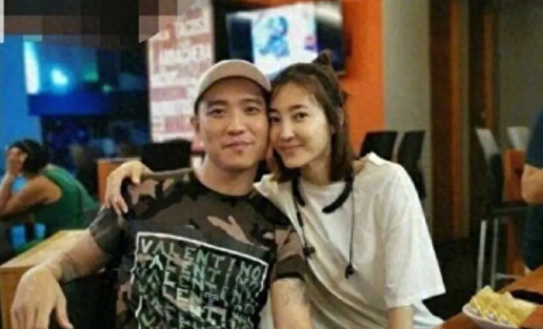
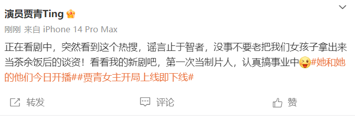
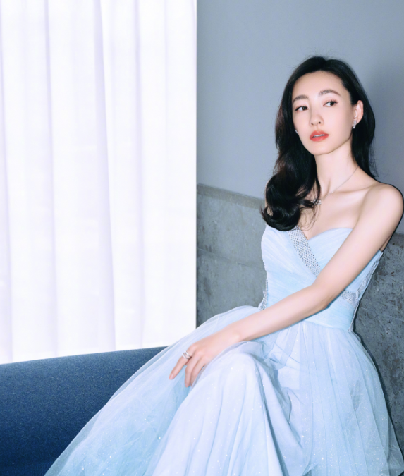
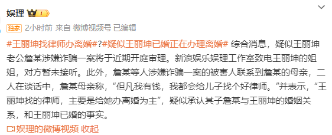
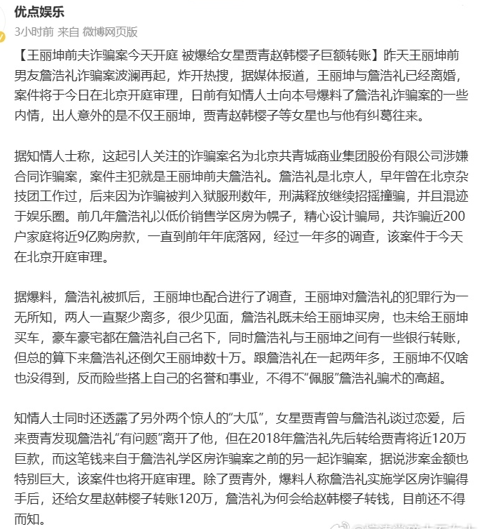

8月8日，有媒体报道指出，王丽坤前夫詹浩礼诈骗案在北京开庭，疑似多位女星卷入其中，包括范冰冰、贾青、赵韩樱子等。

对于此事，贾青在8日下午发文辟谣：“谣言止于智者，没事不要老把我们女孩子拿出来当茶余饭后的谈资…”

据悉，王丽坤2019年被拍到现身北京民政局，当时有传和富商詹浩礼低调领证，后来男方卷入诈骗案，王丽坤工作室曾发声否认牵涉其中。
8月7日，媒体曝光詹某诈骗金额高达9亿，有数百人受骗，有受害人致电詹浩礼的母亲，詹母表示自己不知情，也没钱给儿子找律师，称王丽坤已找律师离婚。
对于此消息，王丽坤保持沉默，尚未回应。

8月8日，詹浩礼诈骗案正式开庭，有媒体扒出内幕，指詹某是北京人，早年在杂技团工作过，后来因为诈骗入狱，出来后仍招摇撞骗，以低价出售学区房为幌子，诈骗200多户家庭近9亿，落网一年多直至8日才正式开庭。

该媒体指出詹某落网后，王丽坤积极配合，她对男方的犯罪行为一无所知，两人很少见面，詹某并未给王丽坤买房、买车，总账算下来，詹某还倒欠女方数十万。
王丽坤深受其害，已经低调离婚，诈骗案实则跟她无关，她也被蒙在鼓里。

另外，该媒体还爆料，指詹某早年混迹娱乐圈，曾和贾青谈恋爱，曾在2018年转账120万，这笔钱疑似来源于另外一起诈骗案，除了贾青，指詹还给赵韩樱子转账120万，此外还以“高人”的身份，声称可以帮助范冰冰复出，后来不了了之。
对于转账及卷入詹某诈骗案，贾青第一个发声否认，王丽坤、赵韩樱子、范冰冰等未回应此事。
Advertisements